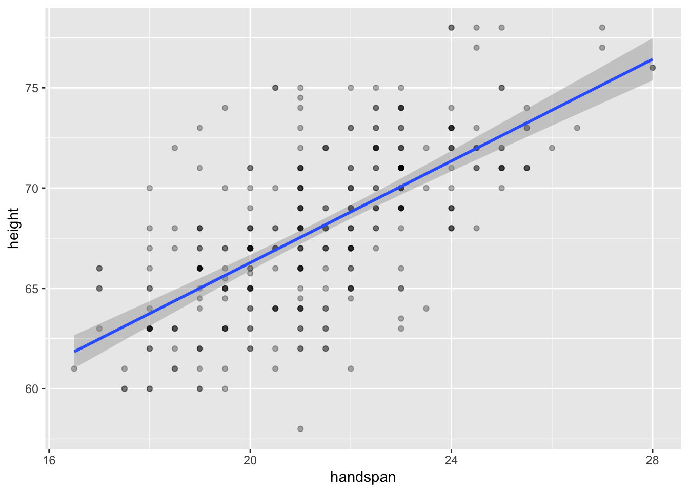
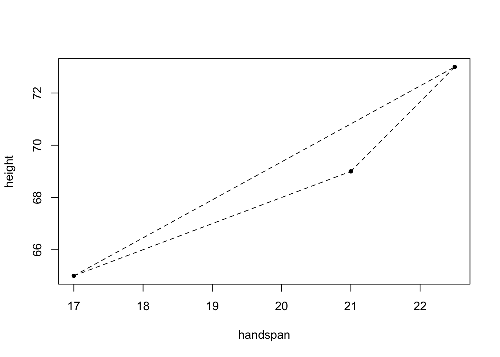

library(tidyverse)
dat <- read_csv('https://ditraglia.com/econ103/height-handspan.csv')
quantile(dat$handspan) 0% 25% 50% 75% 100%
16.5 20.0 21.5 23.0 28.0 Francis J. DiTraglia
March 14, 2022
Have you got a ruler handy? Fantastic! Then hold out your right hand, extend your thumb and little finger as far as they’ll go, and measure the distance in centimeters, rounding to the nearest half centimeter. This is your handspan. Mine is around 23.5 centimeters, but is that big, small, or merely average?1 Fortunately for you, I’ve asked hundreds of introductory statistics students to measure their handspans over the years and (with their consent) posted the resulting data on my website:
0% 25% 50% 75% 100%
16.5 20.0 21.5 23.0 28.0 If we take these 326 students as representative of the population of which I am a member, my handspan is roundabout the 84th percentile.
The great thing about handspan, and the reason that I used it in my teaching, is that it’s strongly correlated with height but, in contrast to weight, there’s no temptation to shade the truth. (What’s a good handspan anyway?) Here’s a scatterplot of height against handspan along with the regression line and confidence bands:

Because handspan is only measured to the nearest half of a centimeter and height to the nearest inch, the dataset contains multiple “tied” values. I’ve used darker colors to indicate situations in which more than one student reported a given height and handspan pair.2 The correlation between height and handspan is approximately 0.67. From the following simple linear regression, we’d predict approximately a 1.3 inch difference in height between two students whose handspan differed by one centimeter:
If you’ve taken an introductory statistics or econometrics course, you most likely learned that the least squares regression line \(\widehat{\alpha} + \widehat{\beta} x\) minimizes the sum of squared vertical deviations by solving the optimization problem \[
\min_{\alpha, \beta} \sum_{i=1}^n (y_i - \alpha - \beta x_i)^2.
\] You probably also learned that the solution is given by \[
\widehat{\alpha} = \bar{y} - \widehat{\beta} \bar{x}, \quad
\widehat{\beta} = \frac{\sum_{i=1}^n (y_i - \bar{y})(x_i - \bar{x})}{\sum_{i=1}^n (x_i - \bar{x})^2} = \frac{s_{xy}}{s_x^2}
\] In words: the regression slope equals the ratio of the covariance between height and handspan to the variance of handspan, and the regression line passes through the sample average values of height and handspan. We can check that all of these formulas agree with what we calculated above using lm()
[1] 40.943127 1.266961(Intercept) handspan
40.943127 1.266961 This is all perfectly correct, and an entirely reasonable way of looking at the problem. But I’d now like to suggest a completely different way of looking at regression. Why bother? The more different ways we have of understanding an idea or method, the more deeply we understand how it works, when it works, and when it is likely to fail. So bear with me while I take you on what might at first appear to be a poorly-motivated computational detour. I promise that there’s a payoff at the end!
There is a unique line that passes through any two distinct points in a plane. So here’s a crazy idea: let’s form every unique pair of students from my height and handspan dataset. To understand what I have in mind, consider a small subset of the data, call it test
With three students, there are three unique unordered pairs: \(\{1,2\}, \{1,3\}, \{2,3\}\). Corresponding to these three pairs are three line segments, one through each pair:

And associated with each line segment is a slope
[1] 1.000000 1.454545 2.666667And here’s my question for you: what, if anything, is the relationship between these three slopes and the slope of the regression line? While it’s a bit silly to run a regression with only three observations, the results are as follows:
The slope of the regression line doesn’t equal any of the three slopes we calculated above, but it does lie between them. This makes sense: if the regression line were steeper or less steep than all three line segments from above, it couldn’t possibly minimize the sum of squared vertical deviations. Perhaps the regression slope is the arithmetic mean of slopes? No such luck:
Something interesting is going on here, but it’s not clear what. To learn more, it would be helpful to play with more than three points. But doing this by hand would be extremely tedious. Time to write a function!
The following function generates all unique pairs of elements taken from a vector x and stores them in a matrix:
For example, applying make_pairs() to the vector c(1, 2, 3, 4, 5) gives
[,1] [,2]
[1,] 1 2
[2,] 1 3
[3,] 1 4
[4,] 1 5
[5,] 2 3
[6,] 2 4
[7,] 2 5
[8,] 3 4
[9,] 3 5
[10,] 4 5Notice that make_pairs() is constructed such that order doesn’t matter: we don’t distinguish between \((4,5)\) and \((5,4)\), for example. This makes sense for our example: Alice and Bob denotes the same pair of students as Bob and Alice.
To generate all possible pairs of students from dat, we apply make_pairs() to dat$handspan and dat$height separately and then combine the result into a single dataframe:
X1 X2 X1.1 X2.1
1 22.5 17.0 73 65
2 22.5 21.0 73 69
3 22.5 25.5 73 71
4 22.5 25.0 73 78
5 22.5 20.0 73 68
6 22.5 20.5 73 75The names are ugly, so let’s clean them up a bit. Handspan is our “x” variable and height is our “y” variable, so we’ll refer to the measurements from each pair as x1, x2, y1, y2
x1 x2 y1 y2
1 22.5 17.0 73 65
2 22.5 21.0 73 69
3 22.5 25.5 73 71
4 22.5 25.0 73 78
5 22.5 20.0 73 68
6 22.5 20.5 73 75The 1 and 2 indices indicate a particular student: in a given row x1 and y1 are the handspan and height of the “first student” in the pair while x2 and y2 are the handspan and height of the “second student.” Each student appears many times in the regression_pairs dataframe. This is because there are many pairs of students that include Alice: we can pair her up with any other student in the class. For this reason, regression_pairs has a tremendous number of rows, 52975 to be precise. This is the number of ways to form a committee of size 2 from a collection of 326 people when order doesn’t matter:
Corresponding to each row of regression_pairs is a slope. We can calculate and summarize them as follows, using the dplyr package from the tidyverse to make things easier to read:
Min. 1st Qu. Median Mean 3rd Qu. Max. NA's
-Inf 0.000 1.333 NaN 2.667 Inf 419 The sample mean slope is NaN, the minimum is -Inf, the maximum is Inf, and there are 419 missing values. So what on earth does this mean? First things first: the abbreviation NaN stands for “not a number.” This is R’s way of expressing \(0/0\), and an NaN “counts” as a missing value:
In contrast, Inf and -Inf are R’s way of expressing \(\pm \infty\). These do not count as missing values, and they also arise when a number is too big or too small for your computer to represent:
So where do these Inf and NaN values come from? Our slope calculation from above was (y2 - y1) / (x2 - x1). If x2 == x1, the denominator is zero. This occurs when the two students in a given pair have the same handspan. Because we only measured handspan to the nearest 0.5cm, there are many such pairs. Indeed, handspan only takes on 23 distinct values in our dataset but there are 326 students:
[1] 16.5 17.0 17.5 18.0 18.5 19.0 19.5 20.0 20.5 21.0 21.5 22.0 22.5 23.0 23.5
[16] 24.0 24.5 25.0 25.5 26.0 26.5 27.0 28.0If y1 and y2 are different but x1 and x2 are the same, the slope will either be Inf or -Inf, depending on whether y1 > y2 or the reverse. When y1 == y2 and x1 == x2 the slope is NaN.
This isn’t an arcane numerical problem. When y1 == y2 and x1 == x2, our pair contains only a single point, so there’s no way to draw a line segment. With no line to draw, there’s clearly no slope to calculate. When y1 != y2 but x1 == x2 we can draw a line segment, but it will be vertical. Should we call the slope of this vertical line \(+\infty\)? Or should we call it \(-\infty\)? Because the labels 1 and 2 for the students in a given pair were arbitrary–order doesn’t matter–there’s no way to choose between Inf and -Inf. From the perspective of calculating a slope, it simply doesn’t make sense to construct pairs of students with the same handspan.
With this in mind, let’s see what happens if we average all of the slopes that are not -Inf, Inf, or NaN
[1] 1.259927This is tantalizingly close to the slope of the regression line from above: 1.266961. But it’s still slightly off.
The median handspan in my dataset is 21.5. Let’s take a closer look at the heights of students whose handspans are close to this value:
There is a large amount of variation in height for a given value of handspan. Indeed, from this boxplot alone you might not even guess that there is a strong positive relationship between height and handspan in the dataset as a whole! The “boxes” in the figure, representing the middle 50% of heights for a given handspan, overlap substantially. If we were to randomly choose one student with a handspan of 21 and another with a handspan of 21.5, it’s quite likely that the slope between them would be negative. It’s true that students with bigger hands are taller on average. But the difference in height that we’d predict for two students who differed by 0.5cm in handspan is very small: 0.6 inches according to the linear regression from the beginning of this post. In contrast, the standard deviation of height among students with the median handspan is more than five times as large:
The 25th percentile of handspan is 20 while the 75th percentile is 23. Comparing the heights of students with these handspans rather than those close to the median, gives a very different picture:
Now there’s much less overlap in the distributions of height. This accords with the predictions of the linear regression from above: for two students whose handspan differs by 3cm, we would predict a difference of 3.8 inches in height. This difference is big enough to discern in spite of the variation in height for students with the same handspan. If we were to choose one student with a handspan of 20cm and another with a handspan of 23cm, it’s fairly unlikely that the slope between these points would be negative.
So where does this leave us? Above we saw that forming a pair of students with the same handspan does not allow us to calculate a slope. Now we’ve seen that the slope for a pair of students with a very similar handspan can give a misleading impression about the overall relationship. This turns out to be the key to our puzzle from above. The ordinary least squares slope estimate does equal an average of the slopes for each pair of students, but this average gives more weight to pairs with a larger difference in handspan. As I’ll derive in my next post: \[ \widehat{\beta}_{\text{OLS}} = \sum_{(i,j)\in C_2^n} \omega_{ij} \left(\frac{y_i - y_j}{x_i - x_j}\right), \quad \omega_{ij} \equiv \frac{(x_i - x_j)^2}{\sum_{(i,j)\in C_2^n} (x_i-x_j)^2} \] The notation \(C_2^n\) is shorthand for the set \(\{(i,j)\colon 1 \leq i < j \leq n\}\), in other words the set of all unique pairs \((i,j)\) where order doesn’t matter. The weights \(\omega_{ij}\) are between zero and one and sum to one over all pairs. Pairs with \(x_i = x_j\) are given zero weight; pairs in which \(x_i\) is far from \(x_j\) are given more weight than pairs where these values are closer. And you don’t have to wait for my next post to see that it works:
[1] 1.266961handspan
1.266961 So there you have it: in a simple linear regression, the OLS slope estimate is a weighted average of the slopes of the line segments between all pairs of observations. The weights are proportional to the squared Euclidean distance between \(x\)-coordinates. I’ll leave things here for today, but there’s much more to say on this topic. Stay tuned for the next installment!